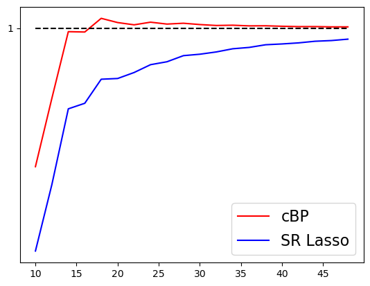
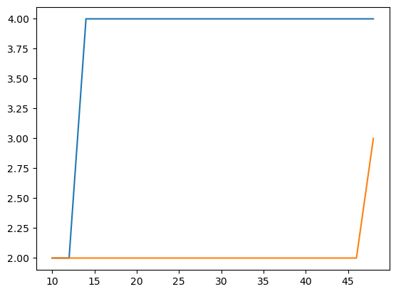

Display of certificates
[6]:
from context import continuous_BP as cbp
from context import mmd as mmd
from context import operators as myops
from context import lasso as ls
from context import helper
[16]:
# Import packages.
import numpy as np
import matplotlib.pyplot as plt
import time
from numpy import linspace
from importlib import reload # Python 3.4+
reload(ls)
reload(myops)
reload(mmd)
reload(cbp)
---------------------------------------------------------------------------
NameError Traceback (most recent call last)
Cell In[16], line 8
6 import os
7 import sys
----> 8 sys.path.insert(0, os.path.abspath(os.path.join(os.path.dirname(__file__), '../srlasso/')))
10 from context import continuous_BP as cbp
11 from context import mmd as mmd
NameError: name '__file__' is not defined
[214]:
#SR Lasso certificate
def SRLasso_certificate(a0,shift,xgrid, tau, Phi, dPhi):
def scaleAfun(x):
scaleA = 1/np.sqrt(np.sum(np.abs(dPhi(x))**2,axis=0))
return scaleA
scaleA = scaleAfun(xgrid)
A0 = Phi(xgrid)
A1 = tau*scaleA[None,:]*dPhi(xgrid)
X_I = np.concatenate((A0, A1),1)
b0 = -a0*shift/tau/scaleA
magnitude = np.sqrt(np.abs(a0)**2 + np.abs(b0)**2)
sgn = np.concatenate((a0/magnitude,b0/magnitude))
coeffs = X_I@ ( np.linalg.inv(np.conjugate(X_I.T)@X_I)@sgn )
eta = lambda x: np.conjugate(Phi(x).T) @coeffs
eta_d = lambda x: scaleAfun(x)*(np.conjugate(dPhi(x).T) @coeffs)
return lambda x: np.abs(eta(x))**2 + tau**2 * np.abs(eta_d(x))**2
#CBP certificates
def cBP_certificates(a0,h, Phi,dPhi,xgrid):
X_I = np.concatenate((Phi(xgrid),dPhi(xgrid)),1)
sgn = np.concatenate((np.ones(len(a0),),np.zeros(len(a0),)))
coeffs = X_I@(np.linalg.pinv(np.conjugate(X_I.T)@X_I)@sgn)
eta = lambda x: np.real( np.conjugate( Phi(x).T ) @coeffs )
eta_d = lambda x: np.real( np.conjugate( dPhi(x).T) @coeffs )
return lambda x: eta(x)+h/2*eta_d(x), lambda x: eta(x)-h/2*eta_d(x)
[215]:
def getOperator(op):
if op == 'Fourier':
#Fourier
fq = 5
x0,x1=0,1
Phi, dPhi = myops.getFourierOp(fq)
elif op=='Gaussian':
#Gaussian
m = 20
sigma = 0.1
tvec = linspace(0,1,m)
x0,x1=0,1
Phi, dPhi = myops.getGaussianOp(tvec,sigma)
elif op=='Laplace':
#Laplace
T = 100
x0,x1=0,8
tvec = linspace(x0,x1,T)
Phi, dPhi = myops.getLaplaceOp(tvec)
else:
print('Not defined!!')
xgrid = linspace(x0,x1,N)
return Phi,dPhi,xgrid
[216]:
plot = False
op = 'Gaussian'
#op = 'Fourier'
#op = 'Laplace'
certmax_srl = []
certmax_cbp = []
supp_srl = []
supp_cbp = []
Nvals = [10,15,20,25,30,35,40,45,50]
Nvals = np.arange(10,50,2)
for N in Nvals:
#N= 30 #grid size
Phi, dPhi,xgrid = getOperator(op)
x0,x1 = min(xgrid),max(xgrid)
A = Phi(xgrid)
dA = dPhi(xgrid)
scaleA = 1/np.sqrt(np.sum(np.abs(dA)**2,axis=0))
h = xgrid[1]-xgrid[0]
# true support
I = np.array([int(N*0.4), int(N*.7)])
spacing = 0.2 #how far into the grid the spikes are
a0 = np.array([2,3])
#calculate the ground truth b_0
tau = 1
f0 = SRLasso_certificate(a0,spacing*h,xgrid[I], tau, Phi, dPhi)
fvec = f0(xgrid)
fvec[I] = 0
certmax_srl.append(np.max(fvec))
#plot certificate on grid
if plot:
plt.plot([x0,x1], [1,1], 'k--')
xgrid_full = np.linspace(x0,x1,10000)
plt.plot(xgrid_full, f0(xgrid_full),'r')
plt.plot(xgrid, f0(xgrid),'rx',markersize=10)
plt.savefig('results/'+str(N)+op+'SRL_certificate.png', bbox_inches='tight',dpi=200, transparent=True)
plt.yticks([1])
plt.ylim([0.99,1.01])
plt.savefig('results/'+str(N)+op+'SRL_certificate_zoom.png', bbox_inches='tight',dpi=200, transparent=True)
plt.show()
#CPB certificate
g1,g2 = cBP_certificates(a0,h, Phi,dPhi,xgrid[I])
gvec = np.maximum(g1(xgrid),g2(xgrid))
gvec[I] = 0
certmax_cbp.append(np.max(gvec))
if plot:
plt.plot([x0,x1], [1,1], 'k--')
xgrid_full = np.linspace(x0,x1,10000)
plt.plot(xgrid_full, g1(xgrid_full), 'r', markersize=10)
plt.plot(xgrid_full, g2(xgrid_full), 'b', markersize=10)
plt.plot(xgrid, g1(xgrid), 'rx', label=r'$\eta+\frac{h}{2} D\eta$',markersize=10)
plt.plot(xgrid, g2(xgrid), 'bx', label=r'$\eta-\frac{h}{2} D\eta$',markersize=10)
plt.legend( fontsize="16")
plt.yticks([1])
plt.savefig('results/'+str(N)+op+'cbp_certificate.png', bbox_inches='tight',dpi=200, transparent=True)
plt.ylim([0.9,1.08])
plt.savefig('results/'+str(N)+op+'cbp_certificate_zoom.png', bbox_inches='tight',dpi=200, transparent=True)
plt.show()
t0 = xgrid[I]+spacing*h
y_obs = Phi(t0)@a0
tol=1e-2
alpha = 0.3
#cBP
a_cbp, shift_cbp= cbp.cBP_1D( A, dA, h, y_obs,alpha )
a_cbp, x_cbp = prune(a_cbp,shift_cbp + xgrid,tol)
#SR Lasso
a,shift = cbp.SRLasso(A, dA, y_obs,alpha,tau)
a, x = prune(a, xgrid+shift ,tol)
supp_srl.append(len(a))
supp_cbp.append(len(a_cbp))
if plot:
plt.plot(xgrid, 0*xgrid, 'kx')
markerline, stemline, baseline, = plt.stem(x,a, label='SR Lasso', linefmt='c', markerfmt='cs', basefmt='c-')
plt.setp(stemline, linewidth = 1.25)
plt.setp(markerline, markersize = 14)
markerline, stemline, baseline, = plt.stem(x_cbp,a_cbp,label='cBP', linefmt='k', markerfmt='kd', basefmt='k-')
plt.setp(stemline, linewidth = 1.25)
plt.setp(markerline, markersize = 12)
plt.stem(t0,a0,'r', label='Ground truth')
plt.legend(fontsize=16)
plt.savefig('results/'+str(N)+op+'rec', bbox_inches='tight',dpi=200, transparent=True)
plt.show()
[217]:
Nvals = np.array(Nvals)
print(len(Nvals),len(certmax_srl))
plt.plot(Nvals,certmax_cbp,'r',label='cBP')
plt.plot(Nvals,certmax_srl,'b',label='SR Lasso')
plt.legend(fontsize=16)
plt.plot(Nvals,Nvals*0+1, 'k--')
plt.yticks([1])
plt.savefig('results/'+op+'certificate_vals.png', bbox_inches='tight',dpi=200, transparent=True)
20 20

[218]:
plt.plot(Nvals,supp_cbp)
plt.plot(Nvals,supp_srl)
[218]:
[<matplotlib.lines.Line2D at 0x154019890>]

[ ]:
[ ]: